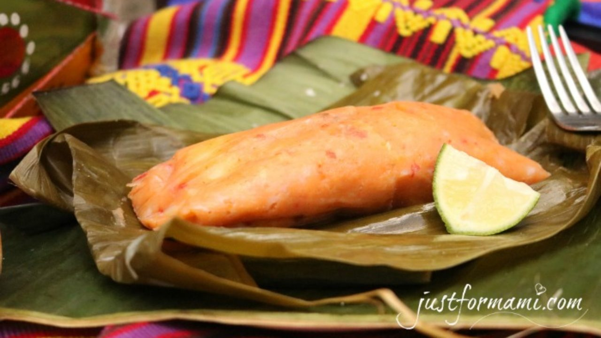

Kak ik

Un platillo propio de la región q'eqchi', este caldo es uno de los favoritos por su carne de “chunto” (chompipe), diferentes verduras, especies y chile, bastante chile. Arroz para acompañar, “pochitos” (tamalitos de manteca) y cacao o pinol para beber. Una delicia.
Paches

Base de papa y recado con bastante tomate para dar ese color rojo -y gran sabor- a uno de los platillos clásicos de los jueves. Sabe mejor si trae chile y pollo.
Chuchitos
Masa, recado y carne, los chuchitos son una de las mejores refacciones. Son pequeños, así que es usual comerse más de uno, servidos con salsa de tomate y queso.
Pepián

Uno de los recados tradicionales del país, el pepián de pollo y su consistencia son un majar exquisito. Va muy bien con verduras, arroz y unas tortillas.
Caldo de res
Uno de los caldos famosos. Preparado con carne de res, al cocido se le agrega yuca, papa, zanahoria, elote y más verduras para una comida que llene a los más hambrientos y guste a todos.
Semuc Champey
Semuc Champey es un monumento natural y uno de los lugares más bellos de Guatemala, con el río Cahabón formando pozas que van del color jade al verde turquesa de acuerdo con la época del año y el clima.
Este espacio se halla en medio de una densa jungla tropical, en el municipio de Lanquín, departamento de Alta Verapaz, y es famoso por un puente natural de piedra, de 300 metros de longitud, por debajo del cual fluye el río, formando la escalera de preciosas pozas sobre el techo calizo.
Los bosques que rodean a Semuc Champey son una valiosa reserva de biodiversidad que incluye más de 120 especies de árboles, un centenar de aves y decenas de anfibios, reptiles y mamíferos. En las aguas han sido identificadas 10 especies de peces.
Castillo San Felipe de Lara
Esta fortaleza colonial fue construida en la embocadura del río Dulce con el lago de Izabal, con una triple función: fuerte militar, cárcel rodeada de agua en tres de sus cuatro lados y centro aduanero y de almacenamiento de mercancías para el comercio con España.
El proyecto fue ordenado por Felipe II y la obra incluyó una formidable torre con 19 cañones para mantener a raya a los piratas y bucaneros. La construcción de otros puertos hizo que el de San Felipe perdiera importancia y el castillo fue abandonado en 1817.
Fue reconstruido en 1955 por el arquitecto Francisco Ferrús Roig, quien previamente visitó el Archivo General de Indias en España para ubicar los planos originales y otros documentos que le permitieron hacer una fidedigna reconstrucción.
En 2001 fue objeto de otra restauración conducida por el Instituto de Antropología e Historia. El Castillo de San Felipe de Lara es administrado por el Instituto Guatemalteco de Turismo.
Playa Dorada
Es una de las playas más bellas de Guatemala, a orillas del Lago Izabal en el departamento del mismo nombre. Se caracteriza por sus doradas arenas salpicadas de piedrecillas y su exuberante entorno formado por grandes cocoteros.
El arenal es estrecho, con la orilla de la playa a pocos pasos de la sombra de los cocoteros. En la larga playa se encuentran disponibles odos los servicios turísticos, como hoteles, restaurantes y lugares de renta de equipos para practicar entretenimientos acuáticos en las tranquilas aguas lacustres.
Técpan
Tecpán es una localidad guatemalteca situada en el Altiplano Central en el departamento de Chimaltenango. Fue fundada por los españoles como Tecpán Guatemala en el lugar en que se encontraba la ciudad prehispánica de Iximché y fue la primera capital del país recién conquistado.
El sitio de Iximché es la principal atracción turística y se ubica a 3 km de Tecpán. Iximché fue la capital del reino de Kaqchikel hasta 1527, cuando la localidad precolombina fue abandonada por la llegada de los conquistadores.
En el yacimiento se han conservado plazas, templos, palacios y dos campos para jugar pelota. Durante las excavaciones fueron rescatadas esculturas, pinturas y otras piezas que se conservan en el museo del sitio, que fue declarado Monumento Nacional de Guatemala.
Entre las construcciones destacan el Gran Palacio I y el Gran Palacio II, que fueron edificaciones residenciales. De su interior se rescataron objetos de cerámica, comales, metates, cuchillos de obsidiana y fragmentos de quemadores de incienso. De los templos excavados, el mejor conservado es el Templo II, una estructura piramidal que tenía un altar para sacrificios humanos.
Quema del torito
Esta tradición tiene sus origines cuando los conquistadores europeos introdujeron los juegos pirotécnicos para las celebraciones religiosas de esa época.
La quema del torito se lleva a cabo regularmente durante las fiestas patronales, antes de empezar los bailes y finaliza con la quema de varios juegos pirotécnicos.
Barriletes gigantes
Una de las tradiciones más pintoresca y esperada por los guatemaltecos son los barriletes gigantes del municipio de Sumpango que toma lugar el 1 de noviembre de cada año.
Estos gigantes barriletes pueden llegar a medir entre 5 a 16 metros y su objetivo es actuar como mensajero de paz al enviar un mensaje de paz a los seres queridos fallecidos de los pobladores de Sumpango.
El 30 de octubre de 1998 la tradición de los barriletes de Sumpango fue declarada Patrimonio Cultural de Guatemala por el ministerio de Cultura y Deportes de Guatemala.
Quema del diablo
La tradición navideña de la quema del diablo inaugura las actividades navideñas en toda Guatemala. Esta tradición guatemalteca consiste en la quema de una pequeña (o en algunos casos gigante) piñata en forma de diablo a las 6 de la tarde del 7 de diciembre de cada año.
Según algunas personas la quema del diablo simboliza una batalla entre el bien y el mal. Al quema la piñata en forma de diablo se garantiza que el bien se el bando victorioso en esta batalla.
Otras personas opinan que el significado o razón de ser de esta costumbre guatemalteca es la de limpiar de manera profunda el hogar, por lo que la quema de la piñata saca lo malo de la casa y/o de las personas.
Danza del palo volador
La danza del palo volar es una tradición oral de Guatemala que tiene sus orígenes en el libro sagrado de los mayas quiché, el Popol Vuh.
Esta tradición recuerda la maldición hacia los hermanos Jun Batz y Hun Ch’owen que fueron convertidos en monos cuando intentaron asesinar a sus otros dos hermanos.
Esta danza consiste en que varios hombres cuelgan de lazos desde lo más alto de un tronco de árbol que se coloca especialmente para esta celebración. Los bailarines utilizan unos trajes que representan a monos y bailan con movimientos graciosos al compás de la marimba, mientras se preparan para subir.